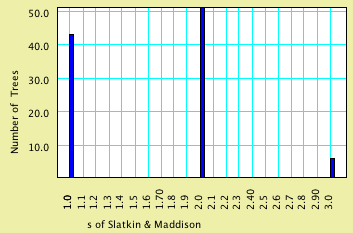

Gene Trees within Populations and Species Trees
Mesquite's features for handling gene trees within populations
and species trees are relevant for population genetics, phylogeography,
and study of gene families. They can also be used by analogy for
host-parasite or other studies of associated taxa. Some of the
relevant features and calculations are:
- simulations of gene trees by coalescence, either within a
single population or in a diverging population or species tree
- simulations of sequence evolution, which can be used to evolve
haplotypes on a gene tree
- calculations of fit of a gene tree to a population or species
tree or population subdivision (Slatkin & Maddison's
s, deep coalescences,
gene duplication and extinction)
- randomizations of trees to obtain null distributions for these
measures of fit
- searching for population trees that optimize fit of gene trees
- cluster analysis of populations using similarities of contained
gene sequences
- charts, scripting and production of batch analyses to yield
statistical tests
In these analyses individual samples or haplotypes will generally
be represented by taxa. Thus, each gene sequence will be a taxon,
and the sequence itself will be a row in a DNA matrix.
Many of the features and calculations described below are illustrated
in the example data files in the Mesquite_Folder/examples/Coalescence/
folder. The majority of these features are provided by the Coalescence
package (mesquite.coalesce) and the taxa association package (mesquite.assoc);
some are provided by the distance analysis package (mesquite.distance).
Contents
Importing and Exporting data
Mesquite can import and export gene sequences in text files
in the following formats: Simple text table, NBRF/PIF, FASTA,
PHYLIP, .ss (NONA, Hennig86, WinClada) as well as NEXUS files.
It can also import GenBank/GenPept files.
Single population: Coalescence simulations
Gene trees within a single population can be simulated under
the assumption of neutrality, panmixia and constant population
size. A sample of such simulated gene trees can help you generate
null expectations in tests, for instance of population subdivision.
Mesquite simulates these gene trees by a coalescent process, beginning
with the set of defined genes (taxa) and coalescing back in time
until a single common ancestor is reached. Simulated coalescent
trees can be viewed or used in other contexts where a source of
trees is used — in the Tree Window or in Trees charts, for
instance.
To view simulated gene trees, first prepare a data file with
taxa representing the sampled gene copies. Select New Tree Window
from the Taxa&Trees menu, and indicate you want Simulated
Trees as your tree source. Choose Coalescent Trees as your tree
simulator. You will be asked to indicate an effective population
size. The simulated tree that appears will probably not be shown
with branch lengths indicated; for optimal viewing we suggest
indicating you want "Branches Proportional to Lengths"
in the Drawing menu, and use the Tree Form of Curvogram. You may
also want to choose a narrower line width. The tree might look
something like this:

The blue numbers represent time in generations. To examine other
simulated gene trees, scroll from one to another using the blue
arrows in the upper left corner of the Tree Window. You will notice
that depth of the trees vary, depending on when the last coalescence
happened during the simulation. In order to fit the tree into
the window nicely, the scale of generations changes. You may find
it interesting to prevent this rescaling, so that all trees are
shown to the same scale. You can do that using the "Fixed
Scaling" menu item in the Drawing menu.
The parameters of the simulation may be changed using the Set
Seed (Tree simulation) menu item, and the items in the Coalescence
Simulations submenu. To change effective population size, select
"Set Ne". These simulations treat the organisms as haploid.
For reasonably large population sizes, an exponential approximation
can be used in the simulations to avoid having to model all genes
in the population explicitly. This exponential approximation is
the default; you can turn it off using the "Exponential approximation"
menu item.
Simulated gene trees can be generated and saved in a trees block
in your data file. To do this, select Taxa&Trees>Make
New Trees Block From>Simulated Trees>Coalescent Trees.
Simulated gene trees can also be used in charts, as in the following
example.
Example: Chart of coalescence depths
Simulated gene trees can be examined in charts by using Simulated
Trees as your tree source. For instance, the example file 03-coalescenceDepth.nex
shows a chart of time to final coalescence in a sample of 100
gene trees. This was made by asking for the Bar & Line Chart
for trees, using Tree Depth as the value to calculate (this is
a secondary choice), and Simulated Trees, Coalescent Trees as
the source of trees. Here is the same chart modified to ask for
a sample of 10,000 gene trees.

The effective population size is 1,000. Although the average
time to final coalescence is about 1760 generations, the curve
(as expected) has a long tail. By touching on the Text tab of
the window you can see that there was one simulated tree with
depth >11,100 generations.
Multiple populations or species
Gene sequences from multiple populations can be analyzed and
modeled in Mesquite. For instance the following shows a simple
example of 6 genes within 3 extant species or populations, in
which a coalescence simulation within a diverging species tree
(blue) generates a hypothetical gene tree (green).

To treat a set of gene sequences as being distributed across
multiple species, you incorporate them into a single matrix, then
indicate to which species each sequence belongs. Three components
must be established in your data file to do this:
- A block of taxa representing the gene sequences.
The sequences themselves do not need to be represented by a
DNA matrix, although the matrix could of course be important
for some analyses. For purposes of gene tree simulations, however,
it is enough that each gene sequence be represented by a taxon
in a taxa block.
- A block of taxa representing the species
(or populations). Each taxon in this block represents a different
species or population.
- A taxa association block, which is a special
block of information that indicates how the taxa representing
genes are associated with the taxa representing species. It
is this that indicates for each gene what species it belongs
in.
Once these three components are established, you can ask to do
calculations (e.g., gene tree simulations) using the genes in
a way that pays attention to the species in which each gene belongs.
We will next describe how to set up these three components, then
what calculations can be done.
Establishing the association between
genes and species/populations
In this section we describe how to set up a Taxa Association,
that is, to indicate how the taxa in one block are associated
with the taxa in another block. We will explain this in the context
of gene trees and species trees to establish what genes belong
to what species. However, setting up a Taxa Association can also
be useful for studies of parasite and host cospeciation, or for
fusing sequences
of different genes into a single matrix.
Let's suppose you want to set up a file with six gene copies
(sequences) distributed among three species (genes a1 and a2 in
species A, b1 and b2 in species B, and c1 and c2 in species C).
- Make a block of taxa representing the genes. This can be done
by importing a data file with gene sequences, by creating a
new file in Mesquite, or by selecting New Block of Taxa from
the Taxa&Trees menu. Give this block of taxa a recognizable
name, like "Genes". Give the genes (taxa) names in
the List of Taxa window or the Character Matrix Editor. In our
example, the names are a1, a2, b1, b2, c1, and c2.
- Make a block of taxa representing the populations or species
containing the genes, and give it a recognizable name, such
as "Species". Give the species (taxa) names in the
List of Taxa window that will appear, e.g. A, B and C.
- Choose New Association... from
the Taxa&Trees menu. You will be asked which will be the
first block of taxa in the association. Although you can choose
either genes or species to be the first block, it will typically
be easier for you to edit the taxa association if you choose
the containing taxa (species) as the first block. Then, name
the association. You will be asked whether you would like to
edit the association from the perspective of the first or second
block of taxa; typically you would choose to edit it from the
perspective of the containing (species) taxa.You will be presented
with the List of Taxa window with a special Association Editor
panel to the right, and a column in the table showing the genes
currently associated with each species.
To indicate what genes are associated with a species, first
select a species in the table at left. In the example above,
species B is selected. Then, go to the Association Editor panel,
and select the genes to be assigned to that species. Touch on
the arrow button to assign the genes to the species. This replaces
any current assignment to the species. If you want to add to
the genes already assigned to the species, use the add button.
To delete genes from an assignment, select the genes and use
the subtract button.
Editing already-created taxa associations
The instructions above indicate how to create two taxa blocks
(genes, speices) and link them using a Taxa Association. After
you have done this, you can modify the Taxa Association by choosing
Edit Association from the Taxa&Trees menu.
Simulating coalescence within a species/population
tree
Simulating gene trees evolving within a species or population
tree is similar to simulating gene trees in a single population
as described under Single Population. To be able to do it, however,
you need to have already established an association between the
gene taxa and species/populations, as described above. You also
need to have a Tree Window open and showing a species tree, because
the calculations need to be able to find a current species tree
in which to perform the simulation.
If your data file is ready to go, you can generate and use gene
trees simulated within the population tree in many contexts, such
as a Tree Window or chart. You merely need to specify the source
of trees to be Simulated Trees, and choose the simulator to be
either "Coalescence Contained within Current Tree"
(if you are assuming no migration) or "Coalescence
in Current Tree with Migration" (if you are assuming
migration occurs). The latter is a secondary choice, and hence
will be available under "Other Choices" in a menu or by selecting
"Show Secondary Choices" in a dialog. Once you've selected the
coalescence simulator, you will be asked to choose Effective Population
Size and, if you've chosen the option with migration, the migration
rate.
The simulation starts at each extant population. Within each,
the ancestry of the gene copies contained (as specified by the
Taxa Association) is simulated by coalescence, going backward
in time until the simulation arrives at the previous population
(= species) divergence. These within-branch simulations use the
same calculations and assumptions as the Single Population simulations
(neutrality, panmixia). Migration, if assumed, occurs either with
a constant probability per individual per generation (and it is
equally likely to go to any of the contemporaneous populations),
or it occurs as a burst in a single generation. The length of
time allowed within this branch is the length of the branch, which
is treated as the number of generations. (Thus, branch lengths
of the population tree will typically be large, e.g., 1,000 to
1,000,000 or more.) The population size is determined by the chosen
Ne, and is constant throughout the simulation unless modifed by
branch widths. Branch widths, which can be controlled by the Adjust
Lineage Widths tool (the horizontal ruler) in the Tree Window,
are treated as multipliers of the basic Ne. Thus, if the lineage
width is unspecified or is 1.0, then the indicated Ne is used
directly. If the lineage width of a branch is 0.5, then the population
size along that branch is 0.5*(indicated Ne). Population fluctuations
such as bottlenecks can be introduced explicitly along a single
branch by inserting extra nodes within the branch using the Insert
Nodes tool, and then varying the widths of the different segments
independently. This is shown in the example file 08-fluctuating.nex.
By the time the simulation reaches a branch point, i.e. a species/population
divergence, coalescence may have resulted in a single remaining
ancestor of the sampled gene copies, or there may remain more
than one ancestor. Whatever gene ancestors remain, they are united
with the gene ancestors remaining in the sister population into
the ancestral (pre-divergence) population. Coalescence then proceeds
from there, moving backwards along the ancestral branch, and so
on, until the root of the species/population tree is reached.
Then the simulation continues in the root until only a single
gene ancestor remains. The branch lengths in the resulting gene
tree reflect the generations in which each coalescence occurred.
Reconstructing gene history within
species/population tree
If we are given a gene tree and a species/population tree, how
can we interpret how the gene tree fits within the species tree?
In what ancestral species did each gene divergence occur? Mesquite
is currently able to make this reconstruction under only one assumption:
that the only process occurring is lineage sorting (there is no
migration among populations), or, equivalently, gene duplication/extinction.
Thus, the reconstruction reconciles the gene tree into the population
tree (Page and Charleston, 1997) so as to minimize the depths
of gene tree divergences (i.e., minimizing the implied incompleteness
of lineage sorting), which also minimizes gene duplication/extinction
events.
This reconstruction is performed by Mesquite when visualizing
gene trees within species/population trees using the Contained
Gene (or Other) Trees tree drawing mode and when counting deep coalescences,
both of which are described below. Three parameters determine
how the reconstruction is done:
- Treat Contained As Unrooted — If enabled,
then all possible rootings of the gene tree are tried to find
that which minimizes incompleteness of lineage sorting. This
is typically an appropriate setting for empirical gene trees
(which are typically unrooted) but inappropriate for fitting
simulated gene trees into the population history on which they
were simulated, because the roots of these gene trees are known.
(Default: disabled)
- Contained Polytomies auto-resolve —
If enabled, then polytomies in the gene tree will be automatically
resolved into dichotomies so as to minimize incompleteness of
lineage sorting. In the visualization of Contained Gene (or Other) Trees,
such resolved areas are colored magenta. (Default: enabled)
- Use Branch lengths of Contained tree —
If enabled, then the branch lengths of the contained (gene)
tree will be respected in fitting into the species/population
tree. Thus, if the gene tree's branches are long and the population
tree's branches short, the gene tree will be interpreted as
extending deep in time past the root of the species tree, even
if this implies lineage sorting is more incomplete than it might
otherwise need to be. If disabled, then the branch lengths of
the gene tree are ignored in minimizing incompleteness of lineages
sorting. For fitting simulated gene trees into the species tree
on which they were simulated, it is usually best to enable this
option, for then the fit will reflect the actual history. (Default:
enabled)
Visualizing gene history in a species/population
tree
The visualization of green gene trees embedded with blue species
trees shown elsewhere on this page is done by the Contained Gene (or Other) Trees
tree drawer. This tree drawer can be used in various contexts
where trees are drawn (e.g, the Tree Window), but it requires
that the data file is already prepared with two blocks of taxa
and their association. To ask for this visualization, have open
a Tree Window showing trees of Populations (Contained Gene (or Other) Trees
draws species trees with embedded gene trees). Select Drawing>Tree
Form>Other Choices and then choose Contained Gene (or Other) Trees
from the dialog box. You will be asked what gene trees to draw
within the population tree. The gene trees could be from any of
the usual sources: stored in the file, or simulated. You can choose
to show gene trees simulated within the population tree itself
at that moment.
Once Contained Gene (or Other) Trees is showing the tree, many of its controls
will be in the Contained menu, not in the Drawing menu as usual.
If you want the contained gene tree to appear in a separate window
in addition to embedded in the species tree, select Contained>Display
Contained Tree.
Measuring fit between genes and species
or population trees
If the genes of a population do not form a clade in the gene
tree (i.e., a monophyletic group) on the gene tree, then there
is discordance between the gene tree and the population subdivision.
To measure this discordance, Mesquite has these measures:
- s (Slatkin &
Maddison, 1989). This measures discord between the gene tree
and the subdivision into populations; it does not pay attention
to a population tree. It treats the populations as a categorical
character and counts the number of parsimony steps in this character
on the gene tree; the more scattered on the gene tree are the
genes from a population, the higher the s
value. If the populations have been long separate and the only
process causing this scatter is migration, then s
can be interpreted as the minimum number of migration events
between the populations.
The s statistic can be calculated for
gene trees whenever a Taxa Association is available indicating
how the genes are associated with populations.
- Deep coalescences (W.
Maddison, 1997). This measures the discordance between a gene
tree and a species or population tree. It assumes that all discord
between the population and gene trees is due to incomplete lineage
sorting, and counts the number of extra gene lineages (beyond
the minimum of 1) on each branch of the population tree summed
over all population branches. The number of extra lineages is
counted on the best fit of the gene tree into the species tree
using the reconstruction methods described in the previous section.
Deep coalescence can be calculated in various ways:
- Deep Coalescences (gene tree) — This calculates
deep coalescence from the gene tree's point of view. That
is, it can be applied to a gene tree. It seeks a current
species tree (for instance, on in a Tree Window) and measures
the fit of the gene tree within that current population
tree.
- Deep Coalescences (species tree) — This calculates
deep coalescence from the species (or population) tree's
point of view. That is, it can be applied to a species tree.
It seeks a gene tree from available tree sources (e.g.,
gene trees stored in the data file) and measures how well
it fits within the species tree
- Deep Coalescence Multiple Loci — This also calculates
deep coalescence from the species (or population) tree's
point of view, but for multiple gene trees simultaneously.
It seeks a set of gene trees from available tree sources
(e.g., gene trees stored in the data file) and sums deep
coalescences for all of them. For instance, if you choose
Stored Trees as the source of gene trees, all of the gene
trees in a single stored tree block will be used. By summing
deep coalescences for these gene trees, each is treated
as if its descent was independent from the others, that
is, an independent locus. You might expect each locus to
be represented by a different block of taxa, but the Coalescence
package of Mesquite cannot yet sum deep coalescences across
taxa blocks. What if your include loci with different sample
sizes in the different populations (or species), for instance
locus P has 7 sequences from species A, 3 from B, 4 from
C, while locus Q has 5 sequences from A, 3 from B and 6
from C? You can create a taxa block with sufficient taxa
to accommodate both (7 genes contained in A, 3 in B, 6 in
C) and then for each the gene trees representing the different
loci exclude the extra genes as needed.
(NOTE: a bug in versions 1.0 to 2.01 build j27 of Mesquite cause population branches without any contained genes to contribute -1 to the deep coalescence score. This affected absolute but not relative scores. The bug was fixed in version 2.01 build 28.)
- Gene duplications and extinctions.
This measures the discord between a species tree and a gene
tree, assuming all discord is due to duplication of gene loci
and subsequent extinction of (or failure to sample) some loci
in some lineages (Goodman et al, 1979; Page, 1993, Page and
Charleston, 1997). Duplications/extinctions can be counted from
the perspective of either the gene tree or the species tree,
as follows:
- Duplications and Extinctions (gene tree) — This
counts duplications and extinctions from the gene tree's
point of view. That is, it can be applied to a gene tree.
It seeks a current species tree (for instance, on in a Tree
Window) and measures the fit of the gene tree within that
current species tree.
- Duplications and Extinctions (species tree) — This
counts duplications and extinctions from the species tree's
point of view. That is, it can be applied to a species tree.
It seeks a gene tree from available tree sources (e.g.,
gene trees stored in the data file) and measures how well
it fits within the species tree
With either of these, you can choose whether to count duplications
and extinctions together, or just duplications, or just extinctions.
This choice can be made with the Counting Mode (Dup./Ext.) submenu.
These measures assign a value to a tree, and thus are available
as "Numbers for Trees". They can be calculated and displayed
in various contexts, such as a histogram of values for trees,
or in the Tree Legend, or as a column in the List of Trees window.
They can also be used in tree searches.
Example: Effect of population divergence
time on s
If you have reconstructed a gene tree from sampled sequences
from two populations, you may want to use the degree of scrambling
of the genes from the two populations as a measure of completeness
of lineage sorting, and thus time since divergence. Although the
s statistic was designed to measure gene flow, it might be used
instead to measure time since divergence (assuming there is no
ongoing gene flow). In the example below simulations are used
to derive the expected s values under different divergence times.
Ten genes are in each of two populations. A population tree with
branch lengths of 5,000 and 10,000 are compared. These branch
lengths are used as number of generations for the coalescence
simulations, which here are using an effective population size
of 10,000. The green-in-blue images of gene trees in population
trees show the Contained Gene (or Other) Trees tree drawing mode of the Tree
Window, with the gene trees simulated by Coalescence Contained
within Current Tree. The charts are a separate calculation based
on the same population trees; they are Bar Charts for Trees, in
which the block of taxa for the trees are the genes, the value
for the trees is the s statistic, and the gene trees are derived
by simulations using Coalescence Contained within Current Tree.
Note that with divergence 5,000 generations ago, s values of 3
are fairly common, whereas they are quite uncommon with divergence
at 10,000 generations. By adjusting branch lengths, hypotheses
can be tested and confidence limits derived.

Inferring the population or species
tree
Mesquite can infer relationships of species/populations using
contained gene trees or gene sequences, but currently its algorithms
are relatively crude. Tree search and Cluster analysis are two
options.
Tree search
Population trees may be inferred via a tree search that finds
those population trees in which observed gene trees fit best (Maddison,
1997; Page and Charleston, 1997). Mesquite's tree search facility
can be used to seek population trees that minimize deep coalescences
(Maddison, 1997) or duplications and extinctions. Select Taxa&Trees>Make
New Trees Block From>Other Choices and indicate
Tree Search in the dialog box. Select populations as the taxa
for the new trees block (the search will produce population trees).
When asked for the criterion for the tree search, check the "Show
Secondary Choices". You will see three choices for deep coalescences.
Deep Coalescences (gene tree) or Gene Duplications and Extinctions
(gene tree) are inappropriate because they assess fit from the
point of view of the gene tree, but your goal is to assess and
choose species (population) trees. Thus, choose either Deep Coalescence
(species tree), Deep Coalescence Multiple Loci, or Gene Duplications
and Extinctions (species tree). Deep Coalescence (species tree)
and Gene Duplications and Extinctions (species tree) will ask
you what gene tree to use as the basis for measuring fit within
the candidate species trees. Deep Coalescence Multiple Loci will
ask you what block of gene trees to use. More details on these
criteria are given under measuring fit.
Mesquite's tree search does not yet infer branch lengths, and
thus the fit between gene trees and species trees is measured
so as to ignore branch lengths.
Cluster analysis
Cluster analysis can be used to infer population trees by similarity
of contained genes. Select Taxa&Trees>Make
New Trees Block From>Other Choices and indicate
Cluster Analysis in the dialog box. Indicate you want the taxa
of the new trees block to be populations (as we are building a
populations tree). For the measure of distance, indicate Distance
of Contained Taxa (this a secondary choice), and then for the
distance among contained taxa choose Uncorrected Distance or Patristic
Distance (a secondary choice). "Uncorrected distance"
counts the simple number of difference in gene sequences, and
thus choosing this will yield a population tree that depends on
a data matrix of the contained genes, but not on a gene tree.
"Patristic Distance" measures distance along the branches of the
gene tree, and thus requires a gene tree but no gene sequence
matrix. If for the method to count distances among contained taxa
you choose "Closest", and then "Single Linkage" as the cluster
method, you will have an inference method similar to that implied
by Takahata (1989): the similarity between two populations is
judged by their most similar pair of gene sequences (not their
average pairwise sequence divergence).
Simulating sampled gene sequences
Simulations can be used to generate gene sequences evolved under
genetic drift and various models of mutation, either within a
single population or within a history of diverging populations.
To do this, the gene trees simulated as described above (in a
single population or multiple
populations) are used as the basis, and mutations layered
over top of the gene tree to yield a series of simulated sampled
sequences. If done on a single gene tree, a gene sequence matrix
results (each taxon a sampled gene copy; each character a site
in the sequence). However, one can replicate this process automatically
to produce many matrices, and thus obtain statisticial distributions
to test hypotheses. We introduce below some of the possible ways
to generate sequences. For more details see the Character
Simulations page, which explains how the Genesis package of
Mesquite can be used to simulate nucleotide evolution.
To simulate sequence evolution you should first define a model
of evolution as described here.
A key issue in simulating is using the scaling factor of the model
to compensate for the units by which branch lengths are measured.
Gene trees simulated by coalescence have branch lengths measured
in generations, which may be in the thousands or millions, whereas
most standard stochastic models expect trees whose branch lengths
are much less than 10 for typical sequence divergences. For gene
trees with lengths measured in generations, small scaling factors
(e.g., less than 0.0001) should be used. We do not yet have recommendations
as to exactly what scaling factor to use. We suggest you simulate
a few matrices to find the scaling factor that gives you sequence
divergences in the range desired.
Generating a single matrix of
sequences
Gene tree already available in Tree Window
If a gene tree (simulated or otherwise) is shown in a Tree Window,
you can simulate sequences simply by selecting Characters>Make
New Matrix From>Simulated Matrices on Current Tree.
(By "shown in a Tree Window" we don't mean shown as
a thin green tree within the blue population tree in the Contained Gene (or Other) Trees drawing mode. We mean in a Tree Window dedicated to
showing trees for the block of taxa corresponding to genes.) If
your file has multiple taxa blocks you'll be asked for which you
want a new matrix; indicate the taxa corresponding to genes. Indicate
that you want Evolve DNA Characters. You will be asked to choose
a model of evolution and a number of characters (i.e., sequence
length). After it's done, the simulated matrix will be shown to
you in a Character Matrix Editor window. If the sequences appear
highly saturated (many changes) it may mean the scaling factor
was improperly set.
Gene tree not in Tree Window
Select Characters>Make
New Matrix From>Other Choices..., then indicate
Simulated Matrices on Trees as the choice. Using this, Mesquite
will get the gene tree on which to simulate sequences not from
a Tree Window, but from some other available source of trees,
such as gene trees stored in a trees block, or simulated at that
moment by coalescence. After being asked for details about the
model of evolution and number of characters, you will be asked
to specify "Source of trees on which to simulate character
evolution for matrices". Here you choose the source of gene
trees. One possiblity is to choose Simulated Trees then Coalescent
Trees or (under secondary choices) Coalescence Contained within
Current Tree, in which case the matrix will be simulated on a
gene tree simulated by coalescence at that moment.
Generating a series of matrices
Multiple replicate sequence matrices can be generated and stored
to files. This can allow you to perform a statistical test, for
instance generating 100 sequence matrices under some hypothetical
scenario, then examining them to see if their properties match
those of an observed matrix.
On a single gene tree
To generate multiple sequence matrices evolved on a single gene
tree, display the gene tree in a Tree Window. Then choose Characters>Save
Multiple Matrices>Simulated Matrices on Current Tree. You will
be asked to set up the simulation as for a single matrix (see
above), except that you will also be asked to supply a base name
for the file, the number of matrices, and the file format. If
you choose "test" as the base name, 4 matrices, and
the NEXUS file format, then four matrices will be simulated and
written to the files test0.nex, test1.nex, test2.nex and test3.nex.
You will be asked where to save the files.
Each matrix on a different gene tree
Matrices alone —To simulate a series of sequence
matrices, each one evolved on a separate gene tree, select Characters>Save
Multiple Matrices>Other Choices..., then select Simulated Matrices
on Trees. Your choices will be similar to the preceeding single
tree case, except that instead of automatically choosing a gene
tree in a tree window, it will use gene trees from the selected
tree source. The first matrix will be simulated on the first gene
tree from the tree source, the second from the second, and so
on. Thus, if you choose Simulated Trees, Coalescent Trees as your
tree source, then you will be generating a series of matrices,
each simulated on a different gene tree simulated by coalescence
within a population. These matrices represent a series of replicates
of samples of gene sequences from a population evolving under
drift with the specified model of mutation. You can similarly
use Coalescence Contained within Current Tree to simulate genes
evolving in a divergent population history.
Matrices plus batch files —The many sequence files
generated by the preceding option can be analyzed by hand or by
some other program. However, if you want Mesquite to help you
analyze them automatically, you can ask it to generate batch files
that can script Mesquite or some other program to analyze the
resulting files one after another, automatically. A batch file
is simply a text file with instructions to a program; what to
do, step by step. Whether you can do your desired analysis this
way depends on whether the program you want to use to analyze
the files can be scripted using batch files, and whether someone
has designed a batch file template for the analysis.
To generate a series of matrices and corresponding batch files
to analyze them, select Analysis>Batch
Architect> Export Matrices & Batch Files. You
will be asked to specify how the matrices are to be generated,
and then you will be presented with a dialog titled "Export
Matrices & Batch Files". In this dialog you indicate
the number of matrices to save, the base name for the files, and
what batch file template to use. An example is given below, and
details on the use of Export Matrices & Batch Files are given
on the page on Character
Simulations.
Example: Multiple simulations
of sequence samples
Suppose you had 20 gene copies sampled from two populations A
and B and you reconstruct a gene tree. You notice that the copies
from A and B do not form respective monophyletic groups, but rather
are somewhat intermingled on the tree. You calculate the degree
of intermingling using Slatkin & Maddison's s,
and determine it to be 4. You want to know: what would be the
probability of observing an s of 4 if
the two populations had effective population sizes about the same
as the number of generations since divergence, say 10,000. (Assume
the populations have been completely isolated since divergence.)
How can this probability be calculated?
First set up a data file with 20 genes associated with 2 populations,
and display a tree window for populations showing a tree with
divergence at 10,000 generations:

One way to get a quick answer is to select Analysis>New
Bar & Line Chart for>Trees and indicate you
want trees representing genes, and thatyou want Simulated Trees,
with the tree simulator Coalescence Contained within Current Tree.
Indicate as the value to calculate (under secondary choices)
s of Slatkin and Maddison. This would simulate
a series of gene trees within your proposed population history
and plot their distribution of s values.
However, these are the true gene trees simulated, and you don't
know that your empirical gene tree is in fact correct. It would
be better if you simulated not just gene tree evolution, but gene
tree reconstuction also, so that you would be able to compare
simulated reconstructed gene trees with your empirical
reconstructed gene tree. Thus, we will simulate the gene
trees, simulate sequence evolution on them, and take those sequences
and attempt to reconstuct gene trees from them.
The procedure is as follows. First, set up the file to have
the two taxa blocks (genes, populations) and the association between
them. Display a tree window for the populations and set it to
match your hypothetical scenario of population history. Our population
history has two populations diverging 10,000 generations ago,
with effective population size of 10,000. Build a model of sequence
evolution. For instance, we built one like this:

The scaling factor (here, 1.0E-6 which is 0.000001) was chosen
to yield fairly low sequence divergences under the expectation
that the branch lengths on the gene tree could be as long as 10,000
to 50,000 (generations). We tested it by simulating a few matrices
to see that the divergences were as desired.
Then choose Analysis>Batch
Architect>Export Matrices & Batch Files, indicating
to save matrices for the genes. The matrices to be exported come
from Simulated Matrices on Trees (a secondary choice). Choose
Evolve DNA Characters, your model, and 1000 characters to indicate
how each matrix is to be simulated. For the trees on which to
simulate, indicate Simulated Trees, then Coalescence Contained
within Current Tree (a secondary choice). Indicate an Ne of 10,000.
You will be shown the Matrices & Batch Files dialog:

Choose a template that will reconstruct the trees for you from
the matrices. We will assume for the rest of this example that
the template "Basic PAUP Tree Search" was chosen. Indicate
how many matrices to make, and the base name to give to the files
(here, "simForS"). Generating the matrices may take
a while. Produced will be a series of files (here, "simForS0.nex",
"simForS1.nex", etc.) with the matrices, and the files
TreeFileList, [base name]BasisTrees.nex, and commands.nex. TreeFileList
is a simple text file listing tree file names that will be produced
by PAUP*, in this case simForS0.trees, etc. [base name]BasisTrees.nex
(in this example, its name will be simForSBasisTrees.nex) stores
all of the gene trees simulated and used to generate the matrices.
These are saved to document what was done in the simulation. The
file commands.nex is the batch file that tells PAUP* to execute
each of the data files and for each infer trees. Start PAUP* and
ask it to execute commands.nex.
PAUP* should produce the following files, assuming the base name
you choose is "basename":
- basename0.trees, basename1.trees, etc. — trees reconstructed
by PAUP from each of the matrices
- CBbasename — the consensus trees from each of the tree
searches, stored as a series of distinct tree blocks in a single
file
- consensus.trees — the consensus trees fused into a single
tree block
- ConsCons.trees — the consensus of the consensus trees
from all the matrices. (In this example, this file is not very
useful and will likely contained fully unresolved tree.
The key file for us is consensus.trees, because it contains the
100 trees reconstructed, one for each matrix. Back in Mesquite,
ask to Link or Include this file. Then select Analysis>New
BAr & Line Chart for>Trees and indicate you want
trees representing genes, Stored Trees, and the value to calculate
(under secondary choices) s of Slatkin
and Maddison. These Stored Trees will be those reconstructed from
the simulated matrices. The chart may look like this:

As you can see, it appears unlikely that you would reconstruct
a gene tree giving an s value of 4 under
the scenario of population history.
References
Goodman, M., J. Czelusniak, G.W. Moore, A.E. Romeroherrera, and
G. Matsuda. 1979. Fitting the gene lineage into its species lineage,
a parsimony strategy illustrated by cladograms constructed from
globin sequences. Systematic Zoology 28: 132-163.
Maddison, W.P. 1997. Gene trees in species trees. Systematic
Biology 46:523-536.
Slatkin, M. and W. P. Maddison. 1989. A cladistic measure of gene
flow inferred from the phylogeny of alleles. Genetics 123: 603-613.
Takahata, N. 1989. Gene genealogy in three related populations:
Consistency probability between gene and population trees. Genetics
122:957-966.
Page, R.D.M. 1993. Genes, organisms, and areas - the problem of
multiple lineages. Systematic Biology 42: 77-84.
Page, R.D.M and M.A. Charleston. 1997. From gene to organismal
phylogeny: Reconciled trees and the gene tree species tree problem.
Molecular phylogenetics and evolution. 7:231-240.